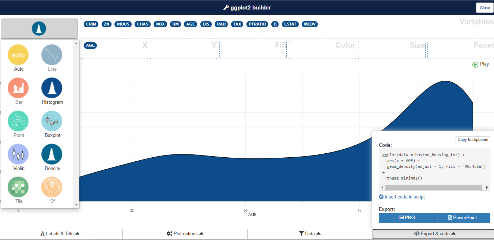

# Paquetes para hacer resúmenes de conjuntos de datos
# install.packages("summarytools")
# install.packages("skimr")
# Paquete para estimar la moda de un vector univariado
# install.packages("modeest")
# Paquete para hacer diversas gráficas
# install.packages("ggpubr")Análisis explorartorio de datos en R
Introducción
En esta práctica vamos a trabajar con una muestra de la base de datos Puntaje Crediticio, y podemos consultar el contexto de dichos datos haciendo clic en este enlace.
¿Qué aprenderemos?
- Cálculo de estadísticas descriptivas univariadas y multivariadas
- Método summary()
- Otros métodos de resumen
- Gráficas básicas univariadas y bivariadas
- Uso del paquete esquisse para crear gráficos en ggplot2
Instalamos paquetes
Importar paquetes y datos
## Cargamos librerías
library("tidyverse")
library("skimr")
library("summarytools")
library("modeest")
library("ggpubr")
## Lectura
library("readxl")
read_xlsx(
path = "data/Puntaje-Crediticio.xlsx",
sheet= "DB"
) -> data_raw
## Revisar la estructura de los datos
str(data_raw)
## Transformamos el ID como una variable tipo char
data_raw$ID <- as.character(data_raw$ID)
## Convertimos variables respectivas a factores
factores <- c("Gender", "Has a car", "Has a property", "Employment status",
"Education level", "Marital status", "Dwelling", "Has a mobile phone", "Has a work phone",
"Has a phone", "Has an email", "Job title", "Is high risk")
data_raw %>% mutate_at(factores,factor) -> data
## Revisamos que la estructura de los datos esté ajustada
str(data)
## Advertencia:
## Una vez la estructura está ajustada hay que hacer limpieza de datos
## Vamos a seguir el procesamiento con fines pedagógicosEstadísticos descriptivos frecuentes
# Univariados
mean() # para la media
median() #para la mediana
modeest::mfv() # para la moda
var() # para la varianza
sd() # para la desviación estándar
max() # para el máximo
min() # para el mínimo
quantile() # para los cuartiles
IQR() # para el rango intercuartílico
# Multivariados
cov() # para la covarianza
cor() # para la correlación
table() # para tablas de contingencia - también sirve en una variableEjemplo: estadísticos descriptivos para la variable income (cuantitativa)
mean(data$Income)
median(data$Income)
var(data$Income)
sd(data$Income)
max(data$Income)
min(data$Income)
quantile(data$Income)
IQR(data$Income)Ejemplo: estadísticos descriptivos para la variable RAD (cualitativa)
# Moda
mfv(data$`Education level`)
# Frecuencias absolutas (Conteos)
table(data$`Education level`)
# Frecuencias relativas (Proporciones)
prop.table(table(data$`Education level`))Un método útil integrado en R: summary()
## Resumen para una sola variable
summary(data$Income)
## Resumen para todo el conjunto de datos
summary(data)Normalmente estas funciones no trabajan si encuentran datos perdidos, para eliminar esta restricción se usa
na.rm = TRUE
## Cálculo del promedio omitiendo datos perdidos/faltantes
mean(data$Income, na.rm = TRUE)Otros métodos de resumen útiles
# Resumen usando el paquete skimr
skim(data)
# Resumen usando el paquete summarytools
summarytools::descr(data)Gráficas básicas
Diagrama de puntos
Presenta los valores de una variable para cada observación usando símbolos, y cada observación se grafica de manera relativa al número de la observación.
plot(data$Income)Histogramas
Es un tipo de gráfica de barras que muestra conteos o frecuencias relativas de valores que caen en diferentes intervalos.
hist(data$Income)
Podemos cambiar el número de barras usando el parámetro breaks
hist(data$Income, breaks=20)Gráficos de densidad (también llamados gráficas Kernel o histogramas suavizados)
Muestra las frecuencias relativas locales de los puntos a lo largo del eje X. En otras palabras, en los intervalos donde hay más puntos/observaciones la gráfica crece indicando mayor “densidad”.
plot(density(data$Income))Los gráficos de densidad son muy útiles para determinar la función de distribución de probabilidad de una variable cuantitativa.
{kind=link}
Gráfico Q-Q
Se usa para revisar si los datos siguen una distribución aproximadamente normal.
ggqqplot(data, x = "Income")Función de distribución empírica acumulada
Muestra la frecuencia relativa acumulada para los valores de la muestra.
ggecdf(data, x = "Income")Boxplot
Muestra la ubicación, dispersión y distribución de una variable mediante la construcción de una figura en forma de caja con un conjunto de líneas (bigotes) que se extienden desde los extremos de la caja. Los bordes del cuadro se dibujan en los percentiles 25 y 75 de los datos, y una línea en el medio del cuadro marca el percentil 50.
boxplot(data$Income)Nota: en ciencia de datos cuando las variables de la base de datos son cuantitativas se les suele llamar variables contínuas, y en estos casos los tipos de gráficos que más se usan son los histogramas y los boxplots. Para variables cualitativas, a las que se le suele llamar variables categóricas, estas usualmente se representan mediante tablas de contingencia, diagramas de barras o diagramas de torta.
Diagrama de barras
# Sin orden
ggplot(data, aes(x = Dwelling))+
geom_bar(stat="count")+
theme_minimal()# Ordenado
# Función para reordenar los factores de un vector en orden decreciente
reorder_size <- function(x) {
factor(x, levels = names(sort(table(x), decreasing = TRUE)))
}
ggplot(data, aes(x = reorder_size(Dwelling)))+
geom_bar(stat="count")+
theme_minimal()Gráficos bivariados y multivariados
Ejemplo: diagrama de dispersión entre dos variables contínuas
plot(data$`Family member count`, data$`Children count`)Ejemplo: boxplot por grupos (una variable contínua y una categórica)
ggboxplot(data, x = "Gender", y = "Income",
palette = c("#00AFBB", "#E7B800"))Ejemplo: matríz de correlación gráfica
library("corrplot")
variables_seleccionadas <- c("Income","Family member count","Account age","Children count")
data[variables_seleccionadas] -> variables_numericas
variables_numericas %>%
cor %>%
corrplot.mixed(lower = "number", upper = "color", lower.col = "#aaaaaa", number.cex = 0.6, tl.cex = 0.6)Una librería útil con una interfaz para hacer gráficas: esquisse
## Instalamos la librería
# install.packages("esquisse")
## Cargamos la librería
# library("esquisse")
## Llamamos a la función esquisser especificando con cuales datos queremos trabajar
# esquisser(data = data, viewer = "browser")